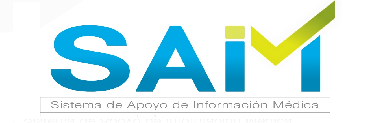

El Sistema de Apoyo de Informacion Medica S.A.I.M orientado a la web, se implemento con el fin de que los usuarios puedan acceder de forma optima y confiable a toda la informacion referente a los pacientes. |
|  |
| Advertencia: Esta Aplicación esta protegida por las leyes de Autor. |
La reproducción o venta ilícita de este sistema o de cualquier parte del mismo esta penada por la ley con severas sanciones civiles y penales. |